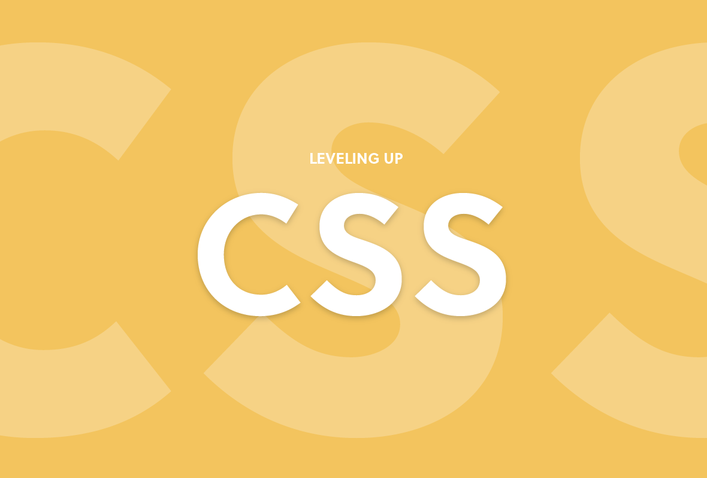

CSS

CSS(cascading style sheets)는 웹 문서의 전반적인 스타일을 미리 저장해 둔 스타일시트이다.
문서 전체의 일관성을 유지할 수 있고, 세세한 스타일 지정의 필요를 줄어들게 하였다.
기존의
HTML은 웹 문서를 다양하게 설계하고 수시로 변경하는데 많은 제약이 따르는데, 이를 보완하기 위해 만들어진 것이 스타일 시트이고 스타일 시트의 표준안이 바로 CSS이다.
간단히 스타일 시트라고도 한다.